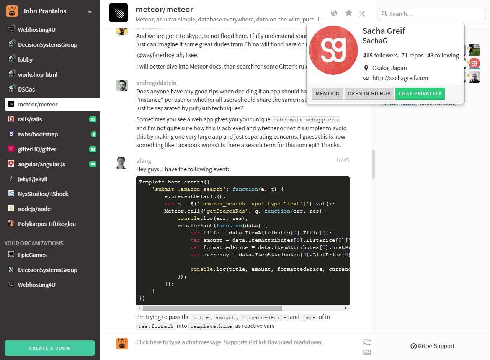

Το Gitter χρησιμοποιεί το API του Github και προσθέτει την δυνατότητα chatting στους users, τα organizations και τα repos που φιλοξενούνται στο Github.
Δημιουργούνται chat rooms ανα user, organization, repo και ο οποιοσδήποτε έχει Github Account, μπορεί να μιλήσει στο εκάστοτε room.
Δεν απαιτείται επιπλέον εγγραφή, απλά ένας λογαριασμός Github και αυτόματα όλοι οι φίλοι και organizations σας περνούν στο Gitter κάνοντας την επικοινωνία ζήτημα μερικών κλικ.
Το Github είναι η μεγαλύτερη πλατφόρμα repository στο κόσμο. Μεγάλες εταιρίες όπως η Microsoft, Valve Software και άλλες, χρησιμοποιούν το Github για τη φιλοξενία των repo τους. Προφανώς δεν το κάνουν για να γλιτώσουν χρήματα hosting, αλλά γιατί το Github Community είναι ιδίαίτερα ενεργό και δημοφιλές.
Όταν λοιπόν έρχεται το Gitter και σου επιτρέπει να επικοινωνείς σε πραγματικό χρόνο όχι μόνο με άπλους devs αλλά με τα άτομα πίσω από μεγάλα software όπως η Source Engine, σου δίνεται η δυνατότητα να λύσεις άμεσα την απορία σου, να δικτυωθείς με άτομα που μοιράζονται το ίδιο πάθος με εσένα και να παρέχεις και εσύ με τη σειρά σου βοήθεια σε κάποιον που έχει λιγότερη εμπειρία από σένα
Καταλαβαίνουμε ότι σίγουρα ένας ακόμη λογαριασμός δεν είναι κάτι που θες να έχεις ή έστω δεν έχεις την όρεξη να κάτσεις να κάνεις. Το ότι είσαι όμως εδώ, σημαίνει ότι θες να ασχοληθείς μέχρι ένα βαθμό με το development και αν το κάνεις, αργά η γρήγορα θα κληθείς να φτιάξεις ένα repo, είτε στη δουλειά σου ή για προσωπικούς λόγους. Όταν έρθει εκείνη η στιγμή θα φτιάξεις ούτως η άλλως το account, γιατί να μην το κάνεις από τώρα;
Στο DSG έχουμε δύο ειδών repo: για τα projects που φτιάχνουμε και για τα workshops που οργανώνουμε. Για κάθε repo και από τα δύο είδη υπάρχει ξεχωριστό room στο Gitter.
Δες όλα τα DSG Rooms στο GitterΓια να μιλήσεις σε οποιοδήποτε room, δεν χρειάζεται να είσαι μέλος του DSG στο github ή σε κάποιο άλλο social network/website. Ο καθένας, φοιτητής του Τ.Ε.Ι. Στερεάς Ελλάδας ή μη, μέλος της ομάδας του DSG ή όχι μπορεί να κάνει οποιαδήποτε ερώτηση, παρατήριση ή πρόταση σε οποιοδήποτε από τα διαθέσιμα rooms.
Μπορείς να ξεκινήσεις από τώρα, μιλώντας στο γενικό room στην αρχή!